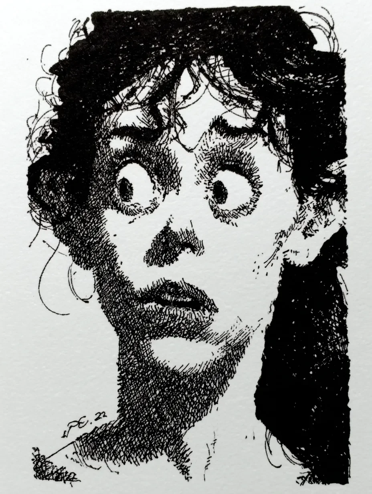

캐서롤 접시가 조리대 위에 놓여 있었고, 아직 따뜻했다. 유리가 숨을 쉴 수 있다면, 아직 숨을 쉬고 있는 것 같았다. 호일 뚜껑 아래에서 김이 연옥에서 탈출하는 영혼들처럼 피어올랐다.
[The casserole dish sat on the counter, still warm. Still breathing, if glass could breathe. Steam curled from beneath the foil lid like spirits escaping purgatory.]
그녀는 20분 전 현관 앞에서 그것을 발견했다. 쪽지도 없었다. 이름도 없었다. 그저 접시와 호일만 있었는데, 요리 프로그램을 너무 많이 본 사람이나 아니면 병원에서 일했던 사람의 정교함으로 구겨져 있었다.
[She'd found it on her doorstep twenty minutes ago. No note. No name. Just the dish and that foil, crimped with the precision of someone who'd watched too many cooking shows or perhaps worked in a hospital.]
이웃집 고양이가 어제 죽었다. 펨버턴 부인의 주황색 얼룩 고양이, 그들의 마당 사이 울타리에서 햇볕을 쬐곤 했던 그 고양이. 그녀는 새벽에 노부인이 수국 쪽으로 고개를 묻고 우는 것을 봤었다.
[Her neighbor's cat had died yesterday. Mrs. Pemberton's orange tabby, the one that used to sun itself on the fence between their yards. She'd seen the old woman crying into her hydrangeas at dawn.]
캐서롤 안의 고기는 부드러웠다. 부자연스럽게 부드러웠다. 포크 아래에서 몇 시간, 아니 며칠 동안 푹 졸인 것처럼 부서져 내렸다. 소스는 음란하다 싶을 정도의 집착으로 고기 조각마다 달라붙어 있었다.
[The meat inside the casserole was tender. Unnaturally tender. It fell apart under her fork like it had been braised for hours, maybe days. The sauce clung to each piece with a devotion that bordered on obscene.]
그녀는 이미 절반을 먹어버렸다.
[She'd already eaten half.]
목이 조여왔다. 부엌이 살짝 기울었다, 아니면 그녀의 머리가 기울고 있는 것일지도 몰랐다. 싱크대 위, 창문에 비친 그녀의 모습이 두개골에 비해 너무 커져버린 눈으로 그녀를 응시했다. 입이 아직 따라잡지 못한 무언가를 알고 있는 눈이었다.
[Her throat tightened. The kitchen tilted slightly, or maybe it was her head doing the tilting. Above the sink, her reflection in the window looked back with eyes that had grown too large for her skull. Eyes that knew something her mouth hadn't caught up with yet.]
펨버턴 부인은 오늘 아침 너무나 이상했다. 파란 꽃들 사이에 서서 어깨를 떨고 있었다. 하지만 돌아섰을 때 그녀의 얼굴은 전혀 젖어있지 않았다. 슬퍼 보이지 않았다. 뭔가 다른 것이었다. 거의 만족처럼 보이는 뭔가. 아니면 안도감. 혹은 자신을 엄청나게 기쁘게 하는 방식으로 문제를 해결했을 때 짓는 표정.
[Mrs. Pemberton had been so strange this morning. Standing there among the blue flowers, shoulders shaking. But her face, when she'd turned, hadn't been wet at all. Hadn't been sad. Had been something else. Something that looked almost like satisfaction. Or relief. Or the expression someone wears when they've just solved a problem in a way that pleased them immensely.]
캐서롤 접시가 머리 위 조명 아래에서 반짝였다. 가게에서 산 것이지, 빈티지가 아니었다. 한 번 쓰고 돌려받을 거라 기대하지 않는 종류. 일회용. 편리한. 증거가 자기 문 앞으로 돌아오는 걸 원하지 않을 때 쓰는 종류.
[The casserole dish gleamed under the overhead light. Store bought, not vintage. The kind you used once and didn't expect to get back. Disposable. Convenient. The kind you used when you didn't want evidence coming back to your door.]
그녀는 플러피를 생각했다. 그렇게 날카로운 노란 눈을 가진 고양이에게는 우스꽝스러운 이름이었다. 그 고양이가 그녀가 아침을 먹는 동안 창문을 통해 그녀를 지켜보던 방식. 판단하듯이. 항상 판단하듯이. 펨버턴 부인이 알고 있었을까? 그녀가 한때 플러피를 차 보닛에서 쫓아냈던 방식을, 어쩌면 너무 거칠게, 어쩌면 약간 과한 만족감으로 겨냥했던 스프레이 병을 들고서, 그걸 봤을까?
[She thought about Fluffy. That ridiculous name for a cat with such penetrating yellow eyes. The way it used to watch her through the window while she ate breakfast. Judging. Always judging. Had Mrs. Pemberton known? Had she seen the way she'd once shooed Fluffy off her car hood, maybe too roughly, maybe with a spray bottle she'd aimed with a bit too much satisfaction?]
그녀의 위가 부두 위 물고기처럼 뒤집혔다.
[Her stomach turned over like a fish on a dock.]
아니야. 절대 아니야. 펨버턴 부인은 일흔셋이고 교회 바자회를 위해 포푸리 향낭을 만드는 사람이었다. 주머니에 고양이가 자수로 놓인 가디건을 입었다. 고양이들. 복수형. 펨버턴 부인은 그동안 실제로 고양이를 몇 마리나 키웠던 걸까? 저 집에서 산 지 얼마나 됐지, 30년? 그리고 플러피 전에 얼룩무늬 고양이가 있었다. 그 전에는 검은 고양이. 아니면 검은 고양이가 두 마리였나? 결국 다들 사라졌지, 안 그래? 고양이들은 그러는 거야. 고양이들은 떠돌아다니지. 고양이들은 죽어. 고양이들은 캐서롤이 되지.
[No. Absolutely not. Mrs. Pemberton was seventy-three and made potpourri sachets for the church bazaar. She wore cardigans with embroidered cats on the pockets. Cats. Plural. How many cats had Mrs. Pemberton actually had over the years? She'd lived in that house for what, thirty years? And there had been that calico before Fluffy. And before that a black one. Or had there been two black ones? They all disappeared eventually, didn't they? Cats did that. Cats wandered off. Cats died. Cats became casseroles.]
아니야.
[No.]
하지만 고기. 맙소사, 고기가 너무나 부드러웠다. 그리고 양념에 뭔가가 들어있었다. 로즈마리, 맞아, 하지만 다른 것도. 거의 약 같은 뭔가. 동물병원을 떠올리게 하는 뭔가.
[But the meat. God, the meat had been so tender. And there'd been something in the seasoning. Rosemary, yes, but something else. Something almost medicinal. Something that reminded her of the vet's office.]
그녀는 핸드폰을 집어 들었다. 검색창에 "고양이 고기 맛이 어떤지"를 입력했다가, 즉시 지웠다. 어떤 것들은 일단 알고 나면 모르는 상태로 돌아갈 수 없다. 어떤 검색들은 당신의 영혼에, 그리고 아마도 당신의 타겟 광고에 영구적인 얼룩을 남긴다. 게다가, 그 정보를 알게 되면 뭘 할 건데? 경찰에 신고? "경찰관님, 옆집 할머니가 자기 고양이를 요리한 것 같고 제가 그걸 자발적으로, 심지어 열정적으로 먹었어요, 리필까지 했거든요."
[She grabbed her phone. Typed "what does cat meat taste like" into the search bar, then deleted it immediately. Some things, once known, couldn't be unknown. Some searches left a permanent stain on your soul and probably your targeted advertising. Besides, what would she do with the information? Call the police? "Officer, I think my elderly neighbor cooked her cat and I ate it willingly, enthusiastically even, I had seconds."]
캐서롤이 이제 그들 사이에 놓여 있었다. 그녀와 접시. 결코 회복될 수 없는 관계.
[The casserole sat there between them now. Her and the dish. A relationship that could never be repaired.]
어쩌면 닭고기일지도. 다크미트 닭고기. 토끼? 사람들이 아직도 토끼를 먹나? 아니면 오리, 푹 졸인 오리, 그건 이렇게 부드럽지, 이렇게 부서지지. 합리적인 설명들이 있다. 합리적인 설명들이 있어야만 한다. 펨버턴 부인은 지난여름 그녀에게 레모네이드를 가져다준 상냥한 노부인이었다. 그녀가 언니를 만나러 갔을 때 화분에 물을 줬던 사람. 오늘 아침 저 미소를 지었던 사람, 저 이상한 미소, 눈까지는 닿지 않고 입 주변 어디쯤에 자리 잡아서 마치 그 표정을 사이즈 맞춰보듯 했던 저 미소.
[Maybe it was chicken. Dark meat chicken. Rabbit? Did people still eat rabbit? Or duck, braised duck, that was tender like this, fell apart like this. There were reasonable explanations. There had to be reasonable explanations. Mrs. Pemberton was a sweet old woman who'd brought her lemonade last summer. Who'd watered her plants when she'd gone to visit her sister. Who'd smiled that smile this morning, that odd smile, that smile that hadn't reached her eyes but had settled somewhere around her mouth like it was trying on the expression for size.]
부엌 창문 너머로 펨버턴 부인의 집이 보였다. 위층 하나를 제외하고는 불이 꺼져 있었다. 작고 구부정한, 그리고 아마도 흥얼거리고 있는 실루엣이 커튼을 가로질러 움직였다.
[Through the kitchen window, she could see Mrs. Pemberton's house. The lights were off except for one upstairs. A silhouette moved across the curtain, small and hunched and possibly humming.]
핸드폰이 진동했다. 모르는 번호에서 온 문자: "저녁 맛있게 드셨길 바라요. 플러피도 누군가가 자기를 감사히 여겨주길 원했을 거예요."
[Her phone buzzed. A text from an unknown number: "Hope you enjoyed dinner. Fluffy would have wanted someone to appreciate him."]
핸드폰이 손에서 미끄러졌다. 타일 바닥에 떨어져 소리를 냈다.
[The phone slipped from her hand. Clattered against the tile.]
밖에서 펨버턴 부인의 커튼이 제자리로 떨어졌다.
[Outside, Mrs. Pemberton's curtains fell back into place.]